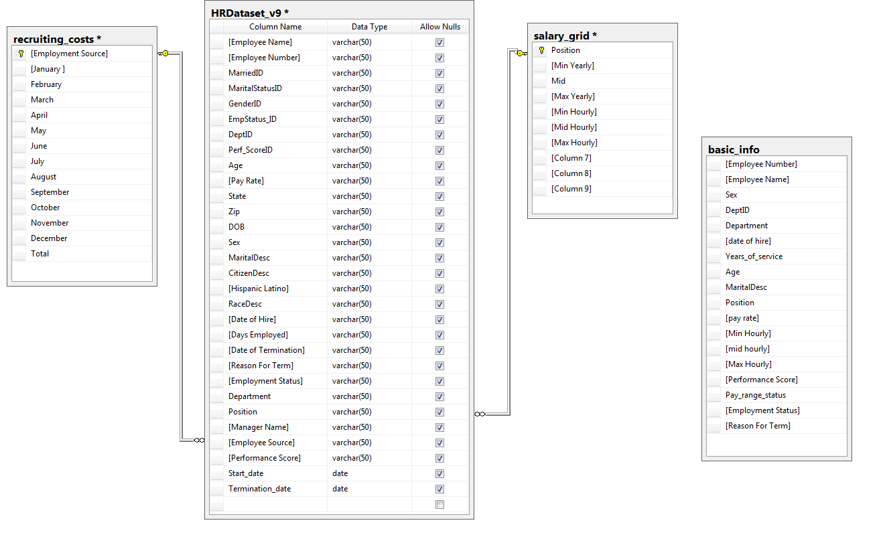
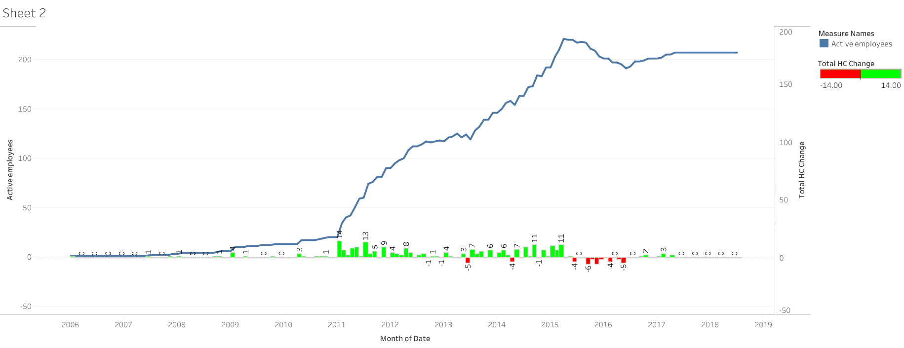
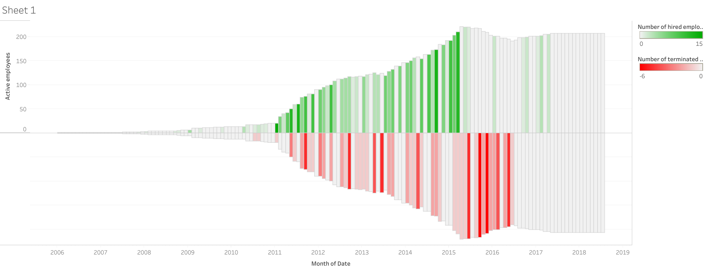

About this project
In this Project I will be covering HR analysis and the approach to different process flows in the data analysis pipeline.
The main goals are:
Each one of the charts is based on an SQL query. All of the queries appears in the repository. The headcount query appears in a separate file, but all of the other queries appear in the data analysis query with the same number of the chart.
The data
The dataset was taken from Kaggle and it can be found on this link: https://www.kaggle.com/rhuebner/human-resources-data-set/data . It is also uploaded to the repository.
All of the charts in this project were made with Tableau and are available on my Tableau public link: https://public.tableau.com/profile/efi7957#!/vizhome/DataAnalysisVis/Performancepayandpayrange
The data consists 5 tables which we will use throughout the project:
The database schema could look like this:

Exploring the company by exploring the data
The first thing that provides an overview of the company is the headcount changes over the years.
Since we don’t have a specific column for head count in the dataset, I created headcount table that captures the necessary headcount data for each month.
In order to do so, I created a table that creates a calendar that start with the month of the first recruited employee to the company and ends with the current date. This would be the first and basic table that will be used as a structure for the headcount table. Then, I joined other tables from the schema and count the number of employees, in order to get the headcount, terminations and recruitments for each month.
 
By visualizing the headcount, we can see that the company was on a growing stage since established.
The growth increased especially during 2011 to 2015 and slowed from mid-2015. We only have data until 04.2017 and this is when, obviously, the headcount is not changing anymore.
Pay analysis
There are a lot of ways to approach pay analysis. I have chosen to divide the analysis into 2 sections.
The first one is more of an overall review of the company pay status. It is reviewed by a dashboard that displays salary data by sex, age, position and pay range. This kind of dashboard should usually be put in the HR department in order to monitor if the salary data is compatible with the company pay strategy.
In this dashboard, I decided not to investigate race differences even though it appears in the data. This is because this analysis is not relevant for most of the Israeli companies, but I did check pay rate differences between males and females.
The left side of the dashboard shows general indicators of the company pay strategy. We can see that the pay difference between males and females is small and the female distribution is flatter then the mails.
The age distribution has no unique pattern. Most of the employees spared out from the age of 25 to 55 and there most of them grouped within pay of 15 to 30. The other and smaller group is paid between 50 To 70.
The pay by marital status shows that married and single employees get paid more than divorced, separated or widowed. This might be logical since single employees have the ability to spend more time at work. This might also be true to married people that can split the time spent with the kids with their partner. On the other hand, divorced, separated and widowed might need to take care of the kids by themselves and probably won’t have the same ability so spend time at work.
In the basic table that I have created, I divided each employee pay to one of the four groups:
This will help us investigate whether the company keeps its pay range strategy.
From the dashboard we can see that most of the employees seats within pay range. The 5 employees below pay range should be checked. If they are good employees, a merit increase should be considered. If there are not good employees, maybe other actions such as termination should be considered.
The same for the employees above pay range. if they are good employees, a promotion should be considered. If they are not good employees, termination should be considered since the cost for the company is higher than it should be.
The right side of the dashboard provides a little dipper insight of the left side.
The upper dashboard might explain the small pay difference between males and females. In this chart a number of positions are presented (only those who have more than 2 employees per position) and their average pay for male and female. The thicker the bar is, the greater the number of the employees in this position.
We can see that for most of the positions, the pay for males and females is the same. There is a small difference in the "network engineer" positions and also "production manager", but the number of employees in this position is small. Most of the difference comes from positions owned only by male or female. "Administrative assistant" and "IT support" are all female positions and has a relatively low salary, while sr. network engineer is a male position and has a relatively high salary.
The lower chart shows the pay histogram of the company. The distribution is pretty normal for company pay. This is usually a right skewed distribution with a higher average salary than the median. This is true except for the 55 bin, which we can see that most of the employees belong to sales department.
Filtering the data only for sales department and splitting the histogram by position, we can see that most of the employees within the 55 bin are area sales manager. This also indicates that the company probable belongs to the sales or marketing sector.
Pay and employee terminations
The second exploration about pay range is deeper than the first one and tries to find if pay is a major factor for employee's attritions.
First, let’s check if we have a problem of voluntary terminations in the company.
Almost 90 % of the terminations in the company are voluntary. This is quite unusual case and need further investigation.
The most general analysis we should check should be the main reasons for terminations.
We can see that “more money” is the 3rd most popular reason. The first two reasons might also indicate on a problem with pay. Employee can choose to go to another position if he is not happy with his salary.
If we want to further investigate, we can check if the termination from reason of more money or maybe even another position or un happy, are more robust in the lower pay range of the company.
Looking at the “lower than pay range” section, the only two reasons for termination are more money and another position. This is quite logical.
On the min-mid pay range, another position is by far the most common reason for termination. Unhappy is the next reason and more money is somewhere in the middle. If we assume that at least some of the employees who moved to another position did it because of the low salary, and if the same is assumed for the “unhappy” reason, we can say that the low pay might have an effect on the willingness to leave.
But while exploring the mid-max pay range, unhappy and more money are also take a big place in the reason for termination. So maybe this is a common reason after all and not relevant to the lower pay ranges only. This is also true even for the higher than pay range.
Since we don’t have employee satisfaction data, we will need to check the situation by looking at other indicators such as the employee’s performance, age, and years of service.
From the above chart we can see that most of the terminations occurs within the first 4 years of service and they are especially common on the lower pay. This is quite common situation in every company. The lower pay usually indicates on a lower position. The lower positions usually characterize with a big turnover. As the position is more important and senior, the turnover usually descends.
The age analysis also doesn’t provide a conclusion about termination.
The terminations occur across all ages and doesn’t grouped to a specific age or pay
In this case, let’s check the performance data.
Note: since we don’t have incentives in the database, we would need to assume that there should be a relationship between the pay end performance.
The performance score distributes normally, exactly as it should be. Most of the employees fully meets expectations and the lower or grater scores has the lower frequency.
To make things easier, I assigned a number to each one of the scores so the 1 means the highest score and 5 means the lowest.
Comparing the pay range with the performance score might give us an answer to the riddle of the high number of voluntary terminations.
This is probably the most compelling graph.
First, we can see that most of the pay categories are evenly spread across the performance score. We can also see that usually the min-mid pay range is lower on the absolute pay than the mid-max pay range.
But the most important conclusion about pay range and score appears on the “higher than pay range” category.
Neither one of the employees that are paid higher than pay range didn’t receive the highest score. And there are employees who get paid above pay range and gets a 4 on the performance score.
In fact, the optimal distribution should be a correlation between the performance and the pay. The highest the score the highest the pay range status.
And yet, there is no such correlation appears in the chart.
These lack of correlation can cause a feeling of unfairness among the employees and as consequence, a voluntary termination for other position with more fair pay.
Recruitment agencies efficiency
The final analysis for this project deals with the efficiency of the recruiting agencies.
Since we don’t have a lot of data on the company recruiting sources, we will need to set up some criterions to measure the efficiency.
After setting these measures, we can visualize the data for better exploration. We can set an average agency cost, average years of service and average performance score as a reference for these measures.
Then, as a benchmark, we can add an overall average for each one of the measures.
In the chart above we assume that the most efficient agencies would be on the top left quarter.
What is relatively surprising is that a lot of the efficient agencies are free. Sources like employee referral, internet search, information session and even Glassdoor are not less efficient than other more expensive agencies.
This finding is also true when comparing employee score to the average cost.
These finding can save a lot of money spent on recruiting agencies that are relatively expensive but might not provide better employees than the other cheapest ones.
One particular agency that seems efficient on both charts is the “professional society” agency.
The cost is relatively cheap the provides quality employees. If I would need to choose an agency to work with, I would defiantly choose this one.